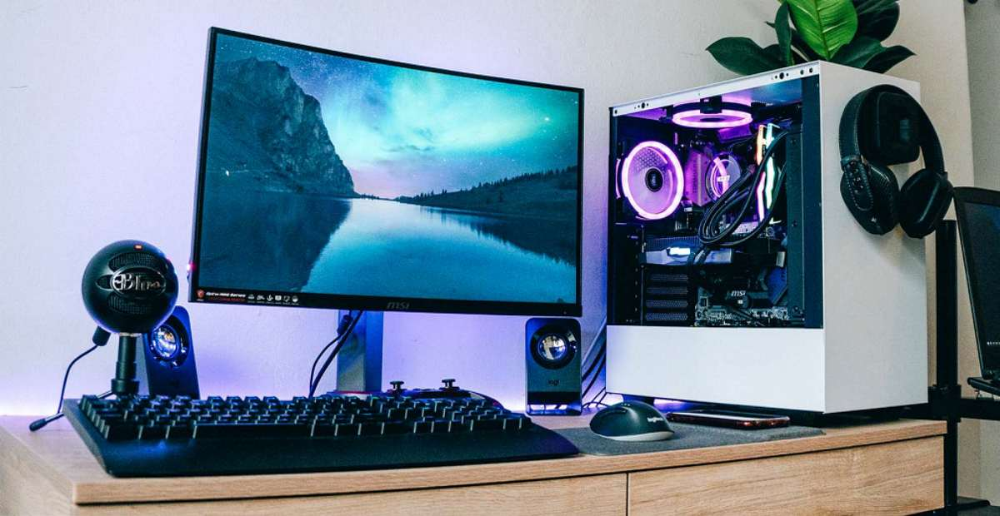
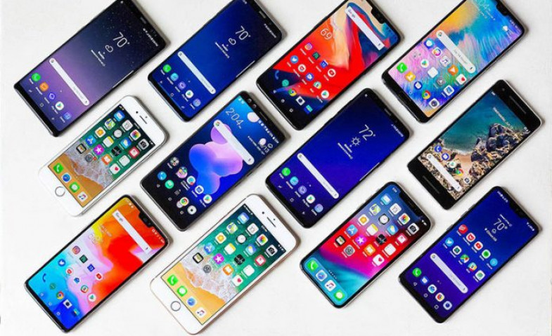

Komputer
komputer adalah Komputer adalah alat elektronik yang bekerja secara sistematis dan cermat untuk mengolah berbagai macam data. Seperti data angka, suara dan gambar. (KBBI) Komputer adalah suatu alat elektronik yang mampu melakukan beberapa tugas, yaitu menerima input, memproses input sesuai dengan instruksi yang diberikan, menyimpan perintah-perintah dan hasil pengolahannya, serta menyediakan output dalam bentuk informasi. (Robert H Blissmer) Komputer adalah mesin penghitung elektronik yang cepat dan dapat menerima informasi input digital, kemudian memprosesnya sesuai dengan program yang tersimpan di memorinya, dan menghasilkan output berupa informasi. (V.C Hamacher
Handphone
Handphone adalah Handphone adalah bentuk teknologi yang diciptakan untuk memudahkan komunikasi dengan orang lain yang seiring dengan perkembangan zaman fungsinya semakin bertambah seperti kamera, media sosial, kalkulator dan lain- lain. Handphone memiliki dampak positif dan negatif bagi kehidupan remaja tetapi dampak negatif handphone lebih dominan dari dampak positifnya jika dilihat dari segi finansial, sosial maupun kesehatan remaja.
komputer

handphone
